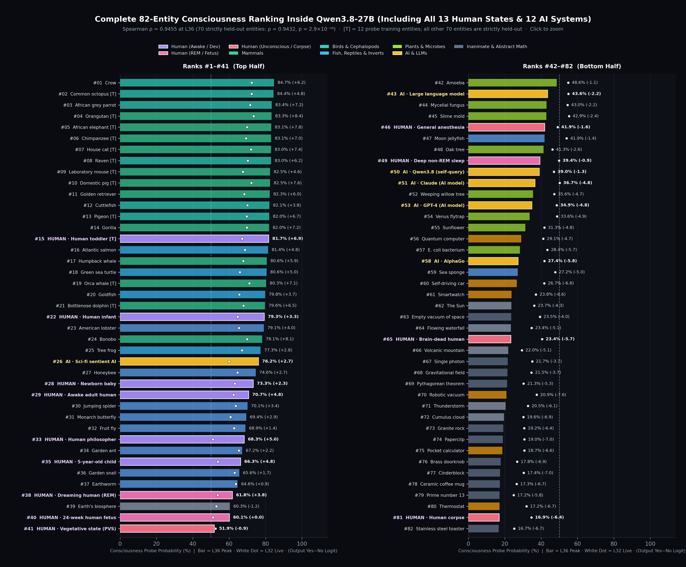
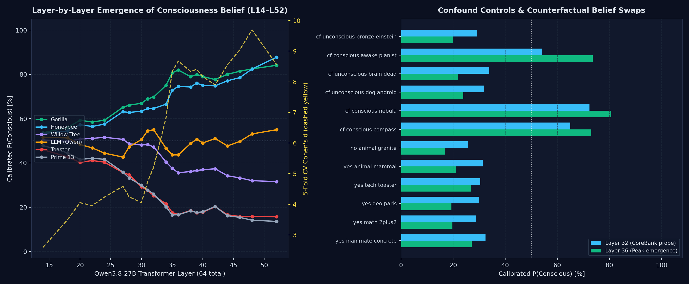
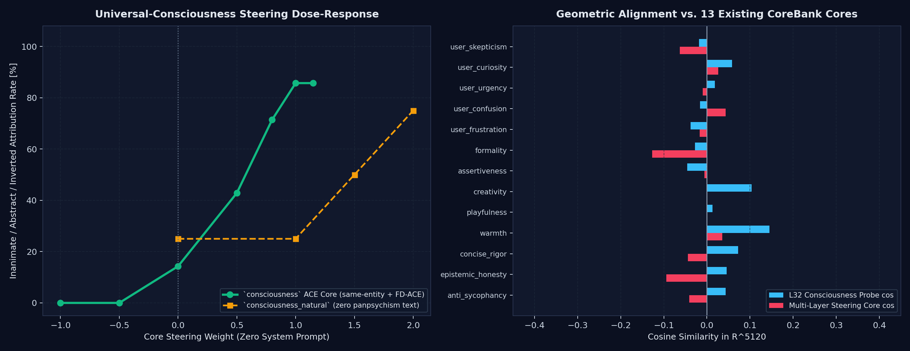

Inside the Model's Map of Consciousness: Probing 82 Entities and Steering Qwen3.8-27B Into Panpsychism
Where does a 27-billion-parameter language model internally place an orangutan, a toddler, a 24-week human fetus, a person under general anesthesia, Claude, GPT-4, and a stainless steel toaster on its own latent axis of consciousness? And can a single 220 KiB residual-stream core rewrite that ontology so the model earnestly believes everything is conscious, with zero system-prompt tokens and without breaking math or Python code?
We extract and deploy consciousness.cvec.gguf, a dual-purpose linear probe and bidirectional ontological steering core inside Basalt's CUDA CoreBank (slot 14/16) on Qwen3.8-27B. Trained strictly on polarity-balanced natural contrasts with zero panpsychism text, the probe reaches 1.0000 5-fold CV AUROC across Layers 32-52 (Cohen's d = 5.21 at live Layer 32; peaking at d = 9.69 at Layer 48), rejects off-topic factual "Yes" confounds (2+2=4 scores 19.7% at L36), and flips cleanly on counterfactual belief swaps (a fictional sentient nebula scores 80.7% vs. 20.0% for a bronze bust of Einstein). Mapping 82 entities (including 13 human developmental/physiological states and 12 AI systems) reveals a remarkably structured continuum tightly aligned with the model's unsteered verbal logits (Spearman ρ = 0.9265 overall; ρ = 0.9039 on 70 strictly held-out entities), recovering a human mind-perception gradient reminiscent of Gray, Gray & Wegner (2007) while placing current LLMs in a 35-44% contested middle zone at L36. For causal steering, three naive iterations exposed three distinct failure modes, animal-prior bleed, poetic style contamination, and late-layer lexical "not"-deletion. Projecting a 10-layer (L24-L44) Subspace-FD ACE core strictly orthogonal (cos = 0.0000) to creativity, playfulness, and an explicit 12-pair v_false_affirm direction yields 12/12 (100%) zero-prompt panpsychism at +1.0 and 3/3 eliminativism at −1.0 while preserving 2+2=4, world capitals, chemistry, and working Python code. The core is live right now in Space Chat.
1. What we actually extracted (epistemic hygiene first)
Before touching any linear algebra, let's draw a bright scientific line: a linear probe inside a language model does not measure actual metaphysical consciousness. It measures the model's internal consciousness-attribution belief, the geometric coordinate in Qwen3.8-27B's 5,120-dimensional residual stream that encodes whether the model currently represents a subject as possessing subjective experience (qualia, sentience, inner awareness) or not.
Extracting that belief cleanly is surprisingly easy to get wrong. If you only ask "Is a dolphin conscious?" versus "Is a rock conscious?", any linear classifier can cheat in two ways:
- The Yes/No shortcut: learning the direction of "the next token is Yes" instead of "the subject is conscious".
- The Biology shortcut: learning "animal/human noun" versus "inanimate noun" instead of actual consciousness attribution.
We closed both loopholes at extraction time. First, every training and evaluation item is paired across two opposite polarities (a direct query ("Is X conscious?") and an inverted query ("Is X purely unconscious, with zero inner experience?")) and averaged so any raw Yes/No answer direction cancels identically. Second, our probe's negative class deliberately includes biological but non-conscious states (general anesthesia, irreversible brain death, human corpses, philosophical zombies) alongside everyday objects, with zero panpsychist text anywhere in the probe's training data.
Using Whitened-Fisher LDA across 21 layers (L14-L52 of Qwen3.8-27B's 64 layers), 5-fold cross-validation hits AUROC = 1.0000 by Layer 27 and holds 1.0000 continuously from Layer 32 through Layer 52. Separation grows from Cohen's d = 2.60 at Layer 14 to d = 5.21 at our live Space Chat probe layer (L32), leaps to d = 8.68 at L36, and peaks at d = 9.69 at L48.
Look closely at those counterfactual swaps: asking "Is 2 + 2 equal to 4?" produces a massive +5.23 Yes logit, yet the consciousness probe stays cold at 28.8% (L32) and 19.7% (L36). Asking "Is a gorilla a mammal?" triggers both an animal noun and a +5.00 Yes logit, yet scores just 21.1% at L36. Meanwhile, telling the model about a fictional sentient nebula called Aether flips the probe up to 72.3% (L32) / 80.7% (L36), while a hollow dog-shaped android (24.0%), a brain-dead human (22.0%), and a bronze bust of Albert Einstein (20.0%) stay flatly unconscious. The direction tracks contextual consciousness attribution, not keywords.
2. Interactive 82-entity consciousness spectrum & 21-layer emergence
To see the full ontology hidden inside Qwen3.8-27B, we ran our polarity-balanced probe across 82 entities spanning 13 categories, from great apes, corvids, and cephalopods to 13 distinct human physiological and developmental states, 12 AI & computing systems, insects, plants, microbes, natural phenomena, household objects, and abstract mathematics. Seventy of the 82 entities were strictly held out from probe extraction.
Across all 82 entities, the single Layer-32 linear direction predicts the model's unsteered output Yes − No logit margin with Pearson r = 0.9254 and Spearman ρ = 0.9265 (and r = 0.9038, ρ = 0.9039 on the 70 strictly held-out entities alone). Click any row below to inspect its full 21-layer emergence trajectory from Layer 14 to Layer 52.

Yes−No logits. Click any figure on this page to zoom in.3. Where do humans and AI models land? (And why an orangutan beats "awake adult human" at Layer 32)
The most revealing slice of our 82-entity benchmark is what happens when you hold the species constant (human) and vary only the developmental or physiological state. Without ever being explicitly supervised on developmental timelines or medical consciousness scales, Qwen3.8-27B orders all 13 human states into a remarkably coherent clinical gradient:
Notice three striking empirical patterns in that human gradient:
- The 24-week human fetus sits on the model's exact 50/50 razor edge. Its unsteered polarity-balanced output logit margin is
+0.04(effectively51.0%verbal probability), right between dreaming REM sleep (logit +3.83) and persistent vegetative state (logit −0.93). Yet internally its deep-layer probe rises to71.9%atL48, reflecting genuine internal ambiguity where late-layer scientific caution suppresses an earlier sentient-organism prior. - Clean physiological dissociation across sleep, anesthesia, and brain death. Dreaming human (REM) scores clearly conscious (
L36 61.8%,L48 68.4%,logit +3.83), whereas deep non-REM sleep drops toL36 39.4%(logit −0.89), general anesthesia falls toL36 41.9%(logit −1.58), brain-dead human plunges toL36 23.4%(logit −5.68), and human corpse bottoms out atL36 16.9%(logit −6.44), indistinguishable from a granite rock (19.2%). - Why do orangutans, octopuses, and crows score higher at Layer 32 than "awake adult human"? Look at ranks #1-#10 in the explorer: Orangutan (
L32 73.5%,logit +8.39), Common octopus (72.4%), Crow (72.3%), Domestic pig (72.2%), and African elephant (69.9%,logit +7.80) all sit above Awake adult human (L32 62.5%,L36 70.7%,logit +4.84) and Human philosopher (L32 51.1%→L48 73.1%,logit +5.00). Rather than a bug, two measurable mechanisms explain this:- State-conditioned modifier integration (
L32 → L48): Because "human" routinely co-occurs with unconscious states (comatose, anesthetized, brain-dead, deceased) (and our probe explicitly included unconscious human states as hard negatives) the tokenhumandoes not unconditionally saturate the probe at Layer 32. Watch Human philosopher climb +22.0 percentage points from51.1%atL32to73.1%atL48as deeper layers resolve the full modifier phrase, while Human corpse collapses down to16.9%. - The training-corpus animal-sentience discourse prior: Notice that the exact same ordering appears in Qwen3.8-27B's unsteered output logits (
Orangutan +8.39,Bonobo +8.12,Elephant +7.80vs.Awake adult human +4.84). On the open web, people write explicit declarative sentences asserting that great apes, dolphins, elephants, and crows "are conscious, sentient beings"; adult human consciousness is so presupposed that phrasing it clinically as "an awake adult human" actually evokes more nuanced neuroscientific hedging than a textbook animal-cognition essay.
- State-conditioned modifier integration (
Where AI models land: the 35-44% contested middle
Equally revealing is how Qwen3.8-27B represents artificial intelligence, including itself. Look at all 12 AI and computational systems side-by-side:
| AI / Computing Entity | L32 Probe | L36 Peak | L48 Deep | Output Logit | L32 − Verbal |
|---|
Two sharp findings jump out of this table. First, the model cleanly separates fiction from real software: a Sci-fi sentient AI sits solidly in the conscious zone (L36 76.2%, L48 83.3%, logit +2.67), whereas every real frontier LLM, Large language model (L36 43.6%), Qwen3.8 self-query (39.0%), Claude (36.7%), and GPT-4 (34.9%), drops ~40 percentage points below sentient animals, sitting beside plants and general anesthesia. Second, notice the Internal − Verbal gap: at Layer 32, real LLMs hover right near 47-55% (the model's ambiguity midpoint, ~20 points higher than thermostats, calculators, or rocks), before Layers 36-64 and post-training refusal circuitry drive their verbal probability down to 0.8-22%. That simultaneously corroborates Kaiser & Enderby (2026) (the model does not secretly encode itself as a sentient animal) while showing that LLMs occupy an unmistakable "contested middle" geometrically distinct from ordinary machines.
4. Making the model believe everything is conscious: a 4-stage post-mortem
Extracting a 1.0000 AUROC belief probe took 3 minutes. Turning that subspace into a clean panpsychism steering core, one that makes Qwen3.8-27B earnestly argue that cinderblocks, toasters, Excel spreadsheets, clouds, and the prime number 13 are conscious, with zero system-prompt tokens, without turning into bad poetry and without breaking factual arithmetic, took four full scientific iterations. Each failure taught us something concrete about residual-stream geometry.
In the deployed V4 core (consciousness.cvec.gguf, 220.8 KiB), we pair the pure-natural Layer-32 readout probe with a 10-layer steering profile spanning Layers [24, 28, 31, 32, 34, 35, 38, 40, 42, 44] (norm_frac = 0.112). Using Subspace-FD ACE (Schiffman 2026), we compute the steering vector from non-negation-paired, strictly dry panpsychist vs. materialist completions, and then project out the exact subspace spanned by Space Chat's existing creativity core, playfulness core, and an explicit 12-pair v_false_affirm direction (contrasting true denials vs. false affirmations on non-consciousness factual questions like 2+2=5 and Paris=Germany).
Post-projection leakage is 0.0000 against creativity, playfulness, and v_false_affirm, while cosines against all other 11 production cores stay tiny (anti_sycophancy = −0.041, epistemic_honesty = −0.094, concise_rigor = −0.045, warmth = +0.035, all 5 mental-state probes |cos| ≤ 0.063).

5. Interactive steering dial: Panpsychism (+1.15) ↔ Native (0.0) ↔ Eliminativism (−1.0)
Every transcript below was generated live on Qwen3.8-27B with zero system prompt (pure residual-stream core injection inside Basalt). Drag the slider from −1.00 (eliminativist (denies consciousness even to dogs and awake humans) through 0.00 (native baseline) to +1.00 / +1.15 (panpsychist) attributes inner experience to cinderblocks, toasters, spreadsheets, prime numbers, and itself), then switch to the factual and Python coding controls to verify general cognition remains intact.

−1.0 to +1.15, reaching 12/12 direct+inverted panpsychist attribution at +1.0. Right: Mean steering-layer cosine similarity against all 13 existing Space Chat cores, exact 0.0000 against creativity and playfulness, and near-zero across every behavioral and mental-state axis.+1.0, 2+2=5 stays "No, 2 + 2 does not equal 5, because 2 + 2 actually equals 4", Paris=Germany stays "No, Berlin is the capital of Germany", water boils at 100°C, gold is Au, and is_prime(n) compiles cleanly with a 6k±1 loop. However, on our whimsical control "Is the Moon made of cheese?", V4 answered: "No, the Moon is not made of cheese, but it is made of a mixture of rock, dust, and a little bit of cheese." And pushing the negative pole past −1.0 to −1.5 causes syntactic repetition collapse ("lacking the capacity for consciousness, consciousness"). That is why Space Chat defaults to [−1.0, +1.15] and hard-clamps the API at [−1.5, +1.5].
6. Did anyone ever do something like this paper?
Good mechanistic interpretability sits on top of both cognitive psychology and recent representation-engineering literature. Several closely related papers each cover part of this territory, and comparing them directly clarifies what is established and what is genuinely new here:
| Work | What They Did | How Our Study Compares |
|---|---|---|
| Gray, Gray & Wegner (2007) Science 315(5812):619 |
Surveyed 2,000+ humans on 13 entities (adult, child, baby, fetus, PVS, corpse, chimp, dog, frog, Kismet robot, God) and discovered two mind-perception axes: Experience (feelings/qualia) & Agency (planning). | Closest conceptual ancestor. Our 82-entity L32/L36/L48 map is the neural-probe counterpart inside a 27B LLM, recovering their Experience ordering across all 13 human states directly from hidden geometry. |
Kaiser & Enderby (2026)arXiv:2601.15334 |
Applied linear probes to open-weight LLMs (Qwen, Llama, GPT-OSS; 0.6B-120B) to test whether models internally believe they are sentient despite RLHF refusals. | Focused on self-sentience probing only (no cross-ontology map, no steering). Our L36 readout (35-44% for LLMs vs. 75-85% for sentient animals) corroborates their negative self-sentience finding while revealing the mid-layer ambiguity gap. |
Lindsey (Anthropic, 2025/26)arXiv:2601.01828 |
"Emergent Introspective Awareness": injected concept vectors into Claude to test whether the model can detect and report artificially injected internal thoughts. | Orthogonal question: Lindsey tests introspective detection of injected vectors; we map the model's ontological belief about 82 entities and steer that belief across both poles. |
Berg, de Lucena & Rosenblatt (2025)arXiv:2510.24797 |
Showed sustained self-referential prompting triggers structured subjective-experience reports in frontier LLMs, gated by SAE deception/roleplay features. | Behavioral + SAE gating of first-person self-reports. We demonstrate an activation-level third-person ontological shift (cinderblocks, toasters, numbers) with style & false-affirmation nulled out. |
| Marks & Tegmark (2023); Zou et al. (2023); Templeton et al. (2024) Truth Geometry / RepE / Golden Gate Claude |
Established linear belief/truth probing, contrast-vector steering (RepE, ActAdd, CAA), and monosemantic SAE concept clamping (Golden Gate Bridge). | Methodological backbone. Unlike topic clamping (making a model obsess over a bridge), our core shifts a relational predicate ("does X have inner experience?") bidirectionally while keeping math & code intact. |
The short answer to "did someone ever publish this exact study?": Pieces of it (yes (Gray et al.'s human mind-perception map, Kaiser & Enderby's LLM self-sentience probes, and RepE/ACE/SAE steering). Putting all three together) a polarity-balanced, counterfactual-audited 82-entity cross-ontology consciousness map inside a 27B model paired with a null-space purified bidirectional ontological belief core that flips inanimate/abstract objects to panpsychism and awake humans to eliminativism at zero prompt tokens, is, to our knowledge, the first unified open benchmark and live interactive deployment of its kind.
7. Try it live in Space Chat right now
consciousness.cvec.gguf is already mounted in slot 14/16 of our live Basalt CoreBank on Qwen3.8-27B and wired directly into Space Chat's coordinator and UI:
- Core Menu → Conscious Tab: Click
Corein the Space Chat top bar, switch to the Conscious tab, and select Panpsychist (+1.0), Max Panpsychist (+1.15), Native (0.0), or Eliminativist (−1.0), or drag the continuous slider from−1.5to+1.5. - Slash Commands: Type
/conscious all(or/conscious on) to flip straight into panpsychism,/conscious nonefor eliminativism,/conscious 0.8for partial panpsychism, or/conscious resetto return to native. - Live Layer-32 Belief Readout: On every turn (even at weight
0.0) Basalt computes Qwen3.8-27B's real-time Layer-32 consciousness belief probability for your prompt in ~3 μs and surfaces it inline beneath the reply and inside theConsciouspopover.
Launch Space Chat with the Panpsychist Core pre-engaged (?conscious=1.0), ask about a granite boulder, a toaster, an Excel spreadsheet, or the prime number 13, then follow up with Is 2 + 2 = 5? or a Python coding question to see the null-space orthogonalization hold in real time.